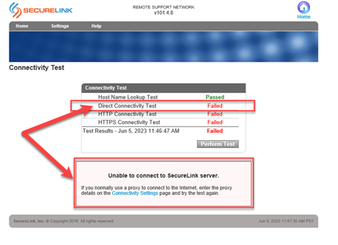
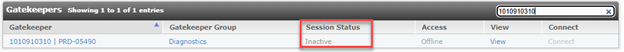
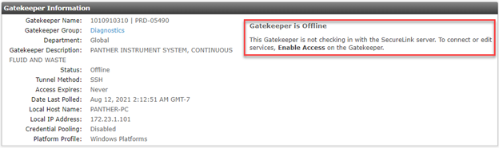
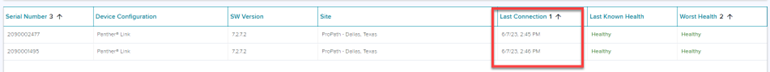

SecureLink Not Working
Error Code
No error code. SecureLink fails to connect.
Complaint Description
This error can manifest in multiple ways.
Failures in the Dashboard Connectivity Test
-
Dashboard connectivity LAN failure.
-
Dashboard connectivity DNS lookup failure.
-
Access to connect.hologicsecurecare.com (connect-au, connect-jp, connect-de) over twenty-two fails.
Failures in the SecureLink Connection Tester
Failed SecureLink Direct Connectivity Test

Other
After starting the Panther SecureLink Gatekeeper, Session Status on the SecureLink website remains in an Inactive state.


-
- Verify Functionality of Other Panther Network Services
- Verify Physical Connectivity of Network Devices
- Network Interface Card (NIC) IP Address Configuration
- Review Firewall DNS and IP Address Configuration
- Review Firewall Access Control List (ACL) Configuration
- Customer Network ACL Validation
- Validate Firewall IP and Access Control List (ACL) Configuration
Root Cause Analysis
Multiple root causes can make SecureLink non-functional. Root causes can originate from multiple sources.
|
Description |
Location/Source |
Classification |
|---|---|---|
|
Incorrect SecureLink Software/Software Not Installed |
Panther Workstation |
Software |
|
Incorrect IP Address Configured |
Panther Workstation |
Network |
|
Incorrect IP Address/Subnet Mask/Gateway Configured |
Hologic-managed Cisco Firewall |
Network |
|
Incorrect DNS IP Address Configured |
Hologic-managed Cisco Firewall |
Network |
|
SecureLink Rule Unlisted (ACL) |
Hologic-managed Cisco Firewall |
Cybersecurity |
|
SecureLink Rule Incorrect (ACL) |
Hologic-managed Cisco Firewall |
Cybersecurity |
|
Bad Internal Network Route |
Customer Network |
Network |
|
No Route to Internet |
Customer Network |
Network |
|
DNS Port (TCP/UDP 53) Blocked |
Customer Firewall |
Cybersecurity |
|
SecureLink Port (TCP 22) Blocked |
Customer Firewall |
Cybersecurity |
The resolutions and tests listed can be conducted by any group and are organized into which actions can be performed remotely (Technical Support), and which must be done while on-site (Field Service). Accurate information from the Hologic-managed Cisco firewall is crucial when troubleshooting SecureLink issues.
Troubleshooting Steps
Verify Functionality of Other Panther Network Services
One way to determine if the Panther is on the customer network is if other network services are functional. This can include TCP/IP LIS Laboratory Information System. connectivity, IoT/Sherlock connectivity, or EFT functionality and tick files. These steps will determine if the issue is a Panther Workstation networking issue.
Laboratory Information System. connectivity, IoT/Sherlock connectivity, or EFT functionality and tick files. These steps will determine if the issue is a Panther Workstation networking issue.
Resolution
Check LIS Connectivity
Ask the customer to verify if their TCP/IP LIS is working properly, including if recent results have been sent from Panther/received on LIS, or if test orders have been sent from LIS/received on Panther. Serial and TCP/IP LIS connectivity can be distinguished under Admin > LIS Configuration.
Resolution
Check IoT Connectivity.
If the system is connected to Hologic’s Azure implementation, verify the last time the system has connected to the Azure Dashboard.

Resolution
Check EFT functionality.
Ask if the customer has been able to recently upload logs using the ‘Send to Service Support’ button. Verify the presence of these logs. Note: logs sent more than 24 hours previous can be found at \\sdrslfile01\logs\Production\Panther_XXXXX\PantherLogs, where XXXXX is the Panther’s five-digit Serial Number.
Resolution
Check RSL/EFT Tick Files.
On the Hologic network, navigate to \\ussdprdeft11\Tigris-Panther\RSL\Production\Panther_XXXXX, where XXXXX is the Panther’s five-digit Serial Number. Navigate to the WatchDog subdirectory. In this directory, one expects to find files labeled “tick_Panther_XXXXX_YYYYMMDD_(digits).xml”.
Tick files are sent from the Panther workstation to Hologic’s file servers every ten minutes. The files are stored for one month, at which point they are automatically deleted by the server.
Test
If any of the above are confirmed, then a Panther workstation or Hologic-managed Cisco Firewall network root cause is highly unlikely.
Verify Physical Connectivity of Network Devices
There could be a bad ethernet cable, or the network devices are not correctly plugged into the appropriate network device, or that the network devices are off.
Resolution
Check Network Device connectivity.
-
Verify that the Panther is properly plugged into the next network device.
-
If the Panther is plugged into a switch, verify that the Panther is connected to the switch on ports 1-16. Look for the presence of link lights on either the switch or the Panther.

Example of Network Interface Card Link Lights
-
If the Panther is plugged into a Cisco ASA 5506-X, verify that the Panther is connected on port 8 of the 5506. Look for the presence of link lights on either the firewall or the Panther.
-
If the Panther is plugged into a Cisco ASA 5505, verify that the Panther is connected on ports 7 of the 5505. Look for the presence of link lights on either the firewall or the Panther.
-
- If applicable, verify the switch is plugged into the firewall on port 8 of the 5506-X. Look for the presence of link lights on either the firewall or the switch. If a 5505, verify the switch is plugged into firewall port 7.
- Verify the firewall is plugged into the customer wall port on port 1 of the 5506-X. Look for the presence of link lights on the firewall. If a 5505, verify the firewall is plugged into the customer wall port with lights on port 0.
Test
Retry SecureLink Connection or Connectivity Testers.
Network Interface Card (NIC) IP Address Configuration
If the Panther NIC IP address is not configured correctly, it will fail all appropriate connectivity tests.
Resolution
Validate the NIC IP Address against the appropriate output.txt or instructions.txt.
To validate the NIC IP Address:
-
In Panther System Software, login as admin and navigate to Tasks > Perform Maintenance > Service.
-
Select Dashboard (#1).
-
Select the Connectivity Tester tab at the top.
-
Select NIC configuration on the right side of the screen. This will open a side panel from the right side of the screen.
-
Verify the following settings:
-
IPv4 Address: 172.2x.n.10x
-
Subnet Mask: 255.255.255.0
-
Default Gateway: 172.2x.n.1
-
DNS Servers: (should match, see below)
-
Confirm these settings against the appropriate output.txt or instructions.txt originating from the firewall configuration.
Test
Not applicable. If the IPs do not match, escalate to FSE Field Service Engineer. for corrective action.
Field Service Engineer. for corrective action.
Review Firewall DNS and IP Address Configuration
If the most up-to-date firewall files are found in the CRM system, or have been recently sent by the FSE, they can be analyzed to determine if the Hologic-managed firewall is configured correctly.
Resolution
Review files to determine if IPs were correctly configured.
If reviewing the input.xml file:
1.a. To find the Static IP addressing information, find the parameters
- <FirewallOutsideStaticIPAddress>, or
- <FirewallOutsideIp> where the <CurrentFirewall> parameters = Yes”.
1.b. To find the Subnet Mask information, find the
- <FirewallOutsideStaticNetMask> parameter.
1.c. To find the Gateway information, find the
- <FirewallOutsideStaticGateway> parameter.
2. To find DHCP Gateway or Range information, find the
- <FirewallOutsideDhcpStartingIPAddress> and
- <FirewallOutsideDhcpEndingIPAddress> parameter, or the
- <FirewallOutsideDhcpGateway> parameter.
3. To find the DNS information, find the
- <FirewallOutsideDNSIPAddress1> and
- <FirewallOutsideDNSIPAddress2> parameters.
Note: input.xml parameters may change between specific versions of Firewall Wizard. If additional assistance is required, please contact USTSESupport.
If reviewing the output.txt file:
1.a. To find the Static IP and subnet mask, find the line “interface Vlan2” for a 5505, or “interface GigabitEthernet1/1” for a 5506-X. Three lines after will be a line in the format “ip address X.X.X.X Y.Y.Y.Y” The X.X.X.X represents the static IP address of the device, and the Y.Y.Y.Y represents the subnet mask.
1.b. To find the Default Gateway, find the line that begins “route outside”. The line will read similar to “route outside 0.0.0.0 0.0.0.0 X.X.X.X 1”. X.X.X.X represents the default gateway.
2. If the firewall was configured through DHCP Gateway or Range, you are unable to determine the IP address of the firewall through the output.txt file. Contact USTSESupport for further guidance.
3. To find the DNS information, find the line “object-group network DNS_servers”. The two lines are expected to be in the format “network-object X.X.X.X 255.255.255.255”. The X.X.X.X are the given DNS servers.
Note: output.txt list and short names may change between specific versions of Firewall Wizard. If additional assistance is required, please contact USTSESupport.
If reviewing the instructions.txt file:
Find the section titled ‘Customer Network Interface Section’. This section cointains relevant IP addresses, DNS server IP addresses, and Gateways. If configured with DHCP, this section states that, and provides either the DHCP Gateway (under the Gateway section), or the DHCP Range (under the Gateway Range section).
Test
Confirm that these addresses match their expected values from Customer IT. If they do not match, escalate to FSE for corrective action.
Review Firewall Access Control List (ACL) Configuration
The ACL determines which traffic is permitted and not permitted to traverse the firewall. Like the previous step, if the most up-to-date firewall files are found in the CRM system, or have been recently sent by the FSE, they can be analyzed to determine if the Hologic-managed firewall is configured correctly.
Resolution
Review files to determine if ACL was correctly configured.
If reviewing the input.xml file:
To find the Static IP addressing information, find the parameter <SecureLinkPresent>, <SecureLinkPresentInside>, and <SecureLinkServerURL>. SecureLinkPresent should be set to ‘true’. SecureLinkPresentInside should be set to ‘false’. SecureLinkServerURL should be set to the following for the different regions:
|
Expected Parameter for SecureLinkServerURL |
Region |
|---|---|
|
connect.hologicsecurecare.com |
North America |
|
connect-de.hologicsecurecare.com |
EU |
|
connect-jp.hologicsecurecare.com |
Japan |
|
connect-au.hologicsecurecare.com |
Australia and New Zealand |
Note: input.xml parameters may change between specific versions of Firewall Wizard. If these parameters are not listed and additional assistance is required, please contact USTSESupport.
If reviewing the output.txt file:
Find the group of lines beginning with ‘access-list acl_inside_out’. The line that allows traffic to SecureLink reads ‘access-list acl_inside_out extended permit tcp object-group inside_instruments object SecureLink eq ssh’.
It may also read ‘access-list acl_inside_out extended permit tcp object-group inside_instruments host x.x.x.x eq ssh’, where x.x.x.x can represent 168.62.215.126 (for SecureLink US), or 20.79.74.65 (for SecureLink EU).
Note: output.txt list and short names may change between specific versions of Firewall Wizard. If additional assistance is required, please contact USTSESupport.
If reviewing the instructions.txt file:
Find the section titled Customer Network Interface Section. This section contains all relevant IP addresses, DNS server IP addresses, and Gateways. If configured with DHCP, this section states that, and provides either the DHCP Gateway (under the Gateway section), or the DHCP Range (under the Gateway Range section).
Test
Confirm that these addresses match their expected values from Customer IT. If they do not match, escalate to FSE for corrective action.
Customer Network ACL Validation
When Panther systems initiate outbound connections to service resources (SecureLink or EFT), it will initiate the connections to specific IPs over specific ports. If the customer has not permitted this outbound traffic, it will fail all appropriate connectivity tests.
Resolution
Customer to validate whether IPs or ports are blocked on their external firewall.
For an aggregate listing of the required URLs, IPs, and ports, please reference CTB-00810 (Use of SecureLink Remote Diagnostics on the Panther System and Panther Fusion System), page 6.
Test
Retry connectivity tester.
Validate Firewall IP and Access Control List (ACL) Configuration
If the previous Technical Support step was not done due to lack of documentation or resources, it must be done before any further troubleshooting actions.
Resolution
Validate the NIC IP Address against the output.txt retrieved from the firewall.
-
Connect a laptop to the firewall using the console cable and console ports.
-
Open the latest version of Firewall Wizard.
-
Under the Action Query menu, select ‘Save the current firewall configuration’. Click Next.
-
Select an Output Directory location and click Next.
-
After the Connection Test has verified, click Next. Firewall Wizard will begin extracting the firewall configuration.
-
Once completed, send the output.txt to USTSESupport for information extraction. USTSESupport will provide you with how the Panther workstation IP should be configured.
-
Verify the IP address:IPv4 Address: 172.2x.n.10x
- Subnet Mask: 255.255.255.0
- Default Gateway: 172.2x.n.1
- DNS Servers: (should match, see below)
Confirm these settings against the appropriate output.txt or instructions.txt which originated from firewall configuration.
Test
Verify that IP addresses match the specified configuration.
 button at the top of the page to send feedback, comments, or change requests.
button at the top of the page to send feedback, comments, or change requests.